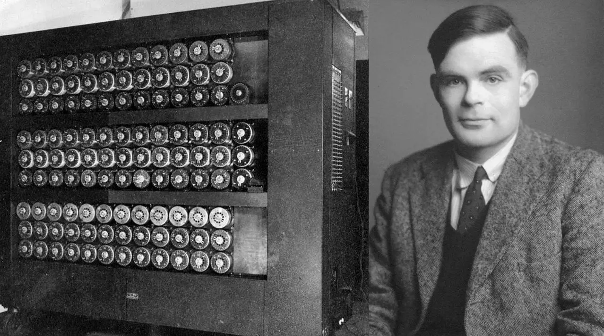

Alan Turing
Alan Mathison Turing était un mathématicien, logicien et cryptologue britannique.

Alan Turing et son oeuvre
Date cle de la vie d'Alan Turing :
- 23 Juin 1912 - Naissance d'Alan Turing a Londre en Angleterre
- 1931 - Turing intègre le King's College de l'Université de Cambridge, où il étudie les mathématiques. Il commence à travailler sur la notion de calculabilité, qui est à la base de son concept de la machine de Turing.
- 1936 - Turing publie un article intitulé "On Computable Numbers, with an Application to the Entscheidungsproblem", qui établit le concept de la machine de Turing, une machine abstraite qui peut simuler n'importe quel algorithme ou programme informatique.
- Seconde Guerre Mondiale - Turing travaille pour les services de renseignements britanniques en tant que cryptologue. Il dirige une équipe qui contribue à décrypter les messages codés de l'armée allemande, ce qui aide grandement les Alliés dans leur lutte contre l'Allemagne nazie.
- 1945 - Turing reprend ses travaux en mathématiques et en informatique. Il travaille sur le développement de la première machine à calculer électronique, le Manchester Mark 1, et publie plusieurs articles sur l'intelligence artificielle.
- 1952 - Turing est arrêté pour homosexualité, alors illégale en Angleterre. Il est condamné à subir une castration chimique et perd son autorisation de sécurité pour travailler sur des projets gouvernementaux
- 7 Juin 1954 - Turing est retrouvé mort à son domicile, dans des circonstances qui restent encore aujourd'hui controversées. Il avait 41 ans.
Alan Turing est aujourd'hui considéré comme l'un des plus grands scientifiques du XXe siècle. Il a reçu de nombreuses distinctions posthumes pour son travail, notamment la médaille d'or de la Royal Society en 1946 et la création du prix Turing, considéré comme le prix Nobel de l'informatique, en 1966.